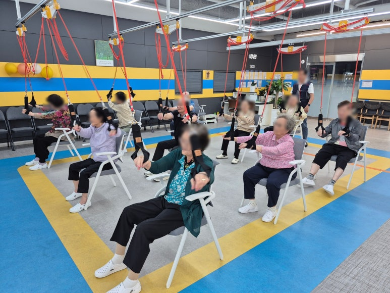
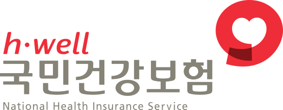
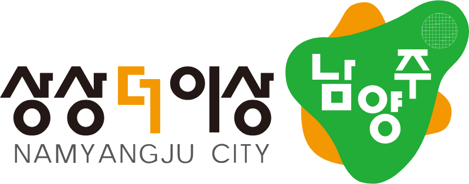
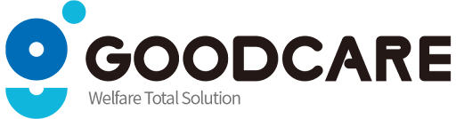

어르신의 건강한 일상을 위한
맞춤형 서비스를 소개합니다.
스마트 운동재활 서비스
슬링·워킹레일·순환운동으로 일상에 필요한 움직임을 돕습니다.
프로그램 자세히 보기의료·간호 서비스
혈압·혈당과 복용약을 확인하고 건강 상태를 살핍니다.
프로그램 자세히 보기인지·정서 지원 서비스
그림·만들기·노래로 인지 활동과 정서적 안정을 돕습니다.
프로그램 자세히 보기생활 지원 서비스
이동과 개인위생 등 일상생활에 필요한 도움을 드립니다.
프로그램 자세히 보기영양 관리 서비스
직접 조리한 식사를 제공하고 식사 상태를 살핍니다.
프로그램 자세히 보기
실버런에서 함께하는 하루.

운동재활부터 돌봄까지
원스톱 케어.
실버런 주야간보호센터는 스마트 운동재활 시스템과 전문 돌봄 서비스를 통해 어르신의 건강한 일상 회복을 돕습니다.
주·야간보호 이용 안내실버런 이용 정보
센터 선택부터 비용과 송영까지
이용에 필요한 안내.



